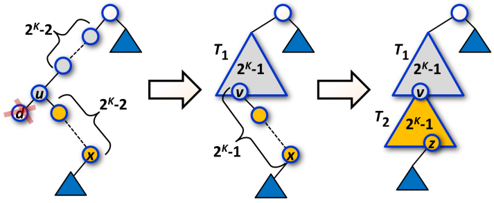

Správa holých větví v BVS
Tým profesora Fabinarise Suchbauma z institutu Maxe Plancka v Saarbrückenu dosáhl v posledních letech významných pokroků na poli binárních vyhledávacích stromů (BVS).
V současné době se tato veleúspěšná skupina zabývá binárními stromy, které vznikají při činnosti garbage collectoru a vyznačují se velkou hloubkou
a relativně malým počtem větví.
Říkáme, že neprázdná posloupnost uzlů n1, n2, ..., nM v BVS je holá větev délky M, pokud jsou
splněné následující podmínky:
- Každý uzel v posloupnosti má nejvíce jednoho potomka.
- Pro každé k = 1, 2, ..., M−1 je uzel nk rodičem uzlu nk+1.
- Jestliže uzel n1 není kořenem celého BVS, potom jeho rodič má dva potomky.
V případě, že holá větev B délky 2K−1 vznikne v BVS důsledkem provedení operace Insert nebo Delete, potom musí být z BVS okamžitě odstraněna a nahrazena perfektně vyváženým podstromem T obsahujícím všech 2K−1 uzlů větve B. Když existuje rodič P kořene větve B, potom se P stane rodičem kořene T, jinak se kořen T stane kořenem celého BVS. Pokud existuje potomek C nejhlubšího uzlu B, potom se C stane potomkem nějakého listu T. Pozice všech uzlů v T a pozice uzlu C relativně vůči T jsou určeny jenoznačně, protože celý strom je vyhledávacím stromem.
Po provedení jedné operace Insert vznikne nejvíce jedna holá větev délky 2K−1. Po provedení jedné operace Delete vzniknou maximálně dvě holé větve velikosti 2K−1. Případ vzniku dvou takovýchto větví je ilustrován na Obrázku 1 níže.
Poznámka 1. Pořadí uzlů (shora dolů) v holé větvi obecně neodpovídá vzestupnému/sestupnému pořadí klíčů (zleva doprava) této větve. Neformálně řečeno, holá větev nemusí být rovná, v různých uzlech může měnit směr.
|
 Obrázek 1. Vznik dvou holých větví délky 2K−1 po smazání uzlu d. Obě holé větve jsou postupně odstraněny a nahrazeny perfektně vyváženými podstromy T1 and T2. Uzel v je zároveň součástí T1 i T2, uzel z je částí T2. Uzly u a v nemusí být totožné, stejně tak uzly x a z, viz Poznámka 1 výše. Malé modré trojúhelníky reprezentují části BVS, které zůstávají po vykonání uvažované operace Delete beze změn. |
Úloha
Je dána konstanta K a konečná posloupnost operací Insert a Delete, které mají být vykonány v daném pořadí nad iniciálně prázdným BVS.
Každá holá větev délky 2K−1, jež během provádění operací dočasně vznikne, musí být okamžitě odstraněna pomocí výše popsané metody.
Spočítejte, kolik holých větví se během celého procesu odstraní.
Poznámka 2. V implementaci předpokládáme, že operace Delete nahrazuje smazaný uzel d nejlevějším uzlem pravého podstromu d,
v případě, že d má dva potomky.
Vstup
První vstupní řádek obsahuje dvě celá kladná čísla K and N oddělená mezerou. Následuje N vstupních řádků, kde každý z nich specifikuje jednu operaci.
Operace Insert je reprezentována vekým písmenem 'I', za kterým následuje mezera a celočíselný klíč.
Operace Delete je reprezentována velkým písmenem 'D', za kterým opět následuje mezera a celočíselný klíč.
Posloupnost vstupních operací nezpůsobí vkládání duplicitního klíče, stejně tak nezpůsobí mazání neexistující klíče.
Platí 2 ≤ K ≤ 12; 2 ≤ N ≤ 1.4×106.
Výstup
Výstup sestává z jednoho řádku obsahujícího nezáporné číslo, jež je rovno celkovému počtu holých větví délky 2K−1 nahrazených perfektně vyváženým stromem během provádění na vstupu specifikovaných operací.
Příklad 1
Vstup2 11 I 90 I 95 I 40 I 80 I 60 I 75 I 70 D 95 D 70 D 40 D 60Výstup 4 |

Obrázek 2.1. Změny v BVS po provedení operace Insert(60), resp. Insert(70), resp. Delete(40), resp. Delete(60) v Příkladě 1 jsou zachycené jako transformace a), resp. b), resp. c), resp. d). Uzly původních holých větví jsou ve všech případech zvýrazněny šedě. |
Příklad 2
Vstup2 15 I 10 I 5 I 20 I 15 I 40 I 30 I 70 I 60 I 80 I 90 I 50 D 30 D 15 D 80 D 90Výstup 2 |

Obrázek 2.2. Změna v BVS po provedení operace Delete(90) v Příkladu 2. Uzly původních holých větví jsou zvýrazněny šedě. Uvedená změna je instancí obecného případu zachyceného na Obrázku 1. |
Veřejná data
Veřejná data k úloze jsou k dispozici. Veřejná data jsou uložena také v odevzdávacím systému a při
každém odevzdání/spuštění úlohy dostává řešitel kompletní výstup na stdout a stderr ze svého programu
pro každý soubor veřejných dat.
Veřejná data